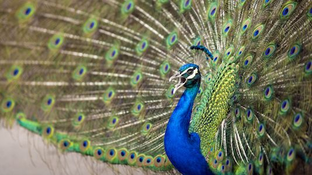
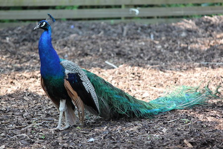

Wow! Based on your answers... You share similarities with a Peafowl (Pavo cristatus)

The Peafowl (commonly known as the Peacock although only the male is called the Peacock), is one of the most stunning creatures on the plant having beautiful tail feathers as well as being this stoic bird. The Peafowl rarely shows any sort of expressions but can be short-tempered when it comes to their nest and territory. They are not afraid to attack anything that threatens them and females will attack other males when they feel encroached upon. They way they intimidate their foes is by faning out their tail feathers and emitting a low-frequency sound inaudible to humans. Like the Peafowl, you are a stylish, stoic and sometimes hot-headed person who does not like to share their emotions and does not like being messed with.
Want to learn more about this species? Click the Feather!

Click on Ceasar to Restart!